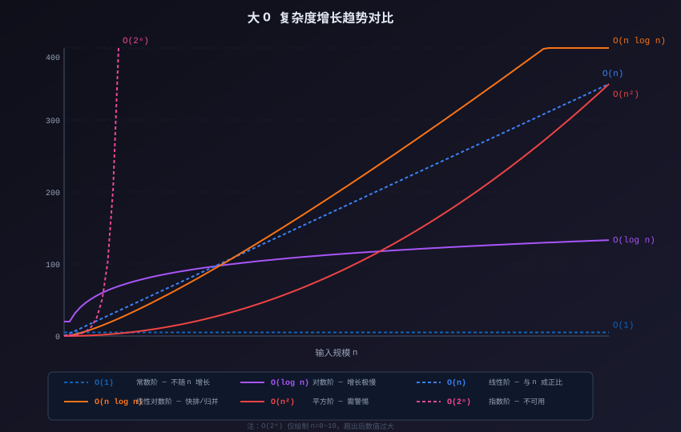

アルゴリズム基礎
アルゴリズム（Algorithm）とは、特定の問題を解決するための、明確で有限な一連の手順である。
アルゴリズムの基本概念と効率の分析方法を理解することは、データ構造とアルゴリズムを学ぶための重要な前提条件である。
アルゴリズムの定義と特性
コンピュータサイエンスにおいて、アルゴリズムとは命令の有限列であり、各命令は1つ以上の操作を表す。
正しいアルゴリズムは、以下の5つの基本特性を備えていなければならない。
| 特性 | 意味 | 反例 |
|---|---|---|
| 入力 | ゼロ個以上の外部入力がある | 入力なしも合法である。例えば乱数の生成など。 |
| 出力 | 少なくとも1つの結果を生成する | 出力が一切ない「アルゴリズム」は無意味である。 |
| 決定性 | 各ステップの意味は明確で曖昧さがなくなければならない。 | 「適当に増やす」のような曖昧な記述は受け入れられない。 |
| 有限性 | 有限のステップ内で終了しなければならず、無限ループしてはならない。 | オペレーティングシステム自体はアルゴリズムではない。理論上、それは永遠に動作し続ける。 |
| 実行可能性 | 各ステップは基本操作によって実現できる。 | 「ゼロ除算」は実行不可能であり、「1ステップでソートを完了する」ことも実行不可能である。 |
アルゴリズムの「有限性」とプログラムの「無限ループ」は矛盾しない。プログラムはバグによって無限ループに陥ることがあるが、アルゴリズム自体は有限ステップで終了しなければならない。違いは、アルゴリズムが「設計意図」のレベルの概念であり、プログラムが「実際の実行」のレベルの概念であることである。
アルゴリズムの表現方法
アルゴリズムを設計・伝達する際には、一般的に2つの表現方法が用いられる。
疑似コード（Pseudocode）
疑似コードは、自然言語に近いが一定の構造化された形式を持つ文章を使用して、アルゴリズムのロジックを記述する。
特定のプログラミング言語の構文に依存しないため、アイデアを素早く表現するのに便利である。
例えば、数値の集合から最大値を見つける疑似コード：
算法：FindMax 输入：数组 A，长度 n 输出：A 中的最大值 1. max = A[0] 2. for i = 1 to n-1: 3. if A[i] > max: 4. max = A[i] 5. return max
フローチャート（Flowchart）
フローチャートは、図形を用いてアルゴリズムの実行プロセスを直感的に示す。

上の図は FindMax アルゴリズムの完全な実行プロセスを示している：入力配列から開始し、現在の最大値を初期化し、各要素を順に比較し、より大きな値が見つかれば最大値を更新し、走査完了後に結果を出力する。
フローチャートの記号の凡例：
| 記号の形 | 意味 |
|---|---|
| 角丸長方形（または楕円） | 開始 / 終了 |
| 長方形 | 処理ステップ |
| ひし形 | 判断 / 分岐 |
| 平行四辺形 | 入力 / 出力 |
| 矢印 | フローの方向 |
アルゴリズム効率の分析
アルゴリズムを設計した後は、その効率を評価する必要がある。これは主に2つの観点から測定される。
時間計算量
時間計算量が表すのは、入力規模 n が大きくなるにつれて、アルゴリズムの実行に必要な基本操作回数の増加傾向である。
注意すべきは、「増加傾向」であり「正確な実行回数」ではないということである。大規模な入力に対しては、定数倍の違いは増加傾向の違いほど重要ではないからである。
空間計算量
空間計算量が表すのは、入力規模 n が大きくなるにつれて、アルゴリズムの実行中に必要な追加メモリ領域の増加傾向である。
ここで「追加」の領域を強調しているのは、入力データ自体の格納以外に、アルゴリズムがどれだけの補助領域を必要とするかを指している。
時間と空間はしばしばトレードオフの関係にある。空間を時間と交換する、または時間を空間と交換することは、アルゴリズム設計における一般的な戦略である。例えば、ハッシュテーブルは追加の記憶領域と引き換えに O(1) の検索時間を得る。一方、インプレースソートアルゴリズムは多少多くの計算ステップを使って追加領域の消費を避ける。
Big O 表記法
Big O 表記法（Big O Notation）これは、時間計算量と空間計算量を評価するための最も一般的な数学的ツールである。
これは、アルゴリズムが最悪の場合に、入力規模 n が大きくなるにつれて、実行時間または空間使用量の増加傾向の上界を表す。
定義：正の定数 c と n0 が存在し、n ≥ n0 のとき常に T(n) ≤ c × f(n) が成り立つならば、次のように記す。T(n) = O(f(n))。
直感的な理解としては、Big O 表記法は定数因子と低次の項を無視し、最も速く増加する項だけに注目する。
例えば、アルゴリズムが 3n² + 100n + 500 回の操作を必要とする場合、n が十分に大きければ n² の項が増加を支配するため、これは O(n²) であるという。
一般的な計算量レベル

上の図は、各計算量レベルが入力規模 n の増加に伴ってどのように変化するかを直感的に示している。
| 表記 | 名称 | n=10 | n=1000 | 代表的なアルゴリズム |
|---|---|---|---|---|
| O(1) | 定数オーダー | 1 | 1 | 配列の添字アクセス、ハッシュテーブルの検索 |
| O(log n) | 対数オーダー | ~3 | ~10 | 二分探索、平衡 BST の操作 |
| O(n) | 線形オーダー | 10 | 1000 | 線形探索、配列の走査 |
| O(n log n) | 線形対数オーダー | ~30 | ~10000 | マージソート、クイックソート（平均） |
| O(n²) | 二乗オーダー | 100 | 1000000 | バブルソート、選択ソート |
| O(2ⁿ) | 指数オーダー | 1024 | 天文学的な数値 | 部分集合問題の総当たり解法 |
表からわかるように、n=1000 のとき、O(1) は依然として1回の操作で済み、O(n) は1000回、O(n²) は100万回必要になる。
大規模データのシナリオでは、適切な計算量のアルゴリズムを選択することで、桁違いの性能差が生じることがある。
実際のプログラミングでは、コアとなるアルゴリズムの計算量が O(n log n) を超えないようにすることが望ましい。計算量が O(n²) 以上になる場合は、入力規模が制御可能かどうか、より優れた代替案が存在するかどうかを特に注意深く検討する必要がある。
時間計算量の計算例
以下は、簡単なCコードとその時間計算量の分析である。
実例
/* 関数の機能：配列要素の合計を計算する
時間計算量：O(n)
n は配列の長さ。ループは n 回実行され、各ループでは定数回の操作を実行する */
int sumArray(int arr[], int n) {
int total = 0; /* O(1) — 代入操作、1回実行 */
for (int i = 0; i < n; i++) { /* ループ本体 */
total += arr[i]; /* O(1) — 加算と代入、n回実行 */
}
return total; /* O(1) — 戻り操作、1回実行 */
}
/* 全体の時間計算量：O(1 + n + 1) = O(n)
低次の定数項は無視される */
int main() {
int nums[] = {5, 10, 15, 20, 25};
int size = sizeof(nums) / sizeof(nums[0]);
int result = sumArray(nums, size);
printf("配列要素の合計: %d\n", result); /* 出力: 配列要素の合計: 75 */
return 0;
}
次に、ネストしたループの例を見てみよう：
実例
/* 関数の機能：n×n の乗算表を出力する
時間計算量：O(n²)
外側ループは n 回、内側ループは n 回、合計 n×n 回 */
void printMulTable(int n) {
for (int i = 1; i <= n; i++) { /* 外側ループ O(n) */
for (int j = 1; j <= n; j++) { /* 内側ループ O(n)、ネスト後の総回数は n² */
printf("%d\t", i * j); /* O(1) 操作 */
}
printf("\n");
}
}
/* 全体の時間計算量：O(n × n) = O(n²) */
int main() {
printMulTable(5); /* 5×5 の乗算表を出力 */
return 0;
}
空間計算量の計算例
空間計算量が注目するのは、アルゴリズムの実行中に追加で割り当てられるメモリ領域である。
実例
#include <stdlib.h> /* malloc/free が含まれるヘッダーファイル */
/* 関数の機能：新しい配列を作成し、元の配列の2乗値を格納する
空間計算量：O(n) — 長さ n の新しい配列を割り当てる */
int* squareArray(int arr[], int n) {
int* result = (int*)malloc(n * sizeof(int)); /* 追加で n 個の int の領域を割り当てる */
if (result == NULL) {
return NULL; /* malloc が失敗した場合は NULL を返す */
}
for (int i = 0; i < n; i++) {
result[i] = arr[i] * arr[i];
}
return result;
}
/* 空間計算量 O(n)：
- 入力配列 arr はカウントしない（入力自体に含まれる）
- result 配列は追加で n 個の int を割り当てる。これが追加領域である
- 変数 i は定数領域 O(1) であり、O(n) に支配される */
int main() {
int nums[] = {1, 2, 3, 4, 5};
int n = 5;
int* squared = squareArray(nums, n);
if (squared != NULL) {
for (int i = 0; i < n; i++) {
printf("%d ", squared[i]); /* 出力: 1 4 9 16 25 */
}
printf("\n");
free(squared); /* 動的に割り当てられたメモリを手動で解放する */
}
return 0;
}
その他の拡張初心者によくある誤解：時間計算量と空間計算量が分析するのは「増加傾向」であり、正確な値ではない。定数係数、低次の項、および異なるプログラミング言語の違いはすべて、O記法（ビッグオー記法）によって無視される。したがって、O(2n) と O(n) は等価である——どちらも線形増加を表す。
クリックしてノートを共有
<p style="font-size:14px;">ノートはこの記事の内容の拡張である必要があります！</p><br> <p style="font-size:12px;"><a href="../tougao.html" target="_blank">記事の投稿は、こちらをクリックしてください</a></p> <p style="font-size:14px;"><a href="../w3cnote/runoob-user-test-intro.html" target="_blank">登録招待コードの取得方法</a></p> <h3 class="text-muted"><i class="fa fa-info-circle" aria-hidden="true"></i> ノートを共有する前に<a href=";.html" class="runoob-pop">ログイン</a>が必要です！</h3> <p><a href="../w3cnote/runoob-user-test-intro.html" target="_blank">登録招待コードの取得方法</a></p>